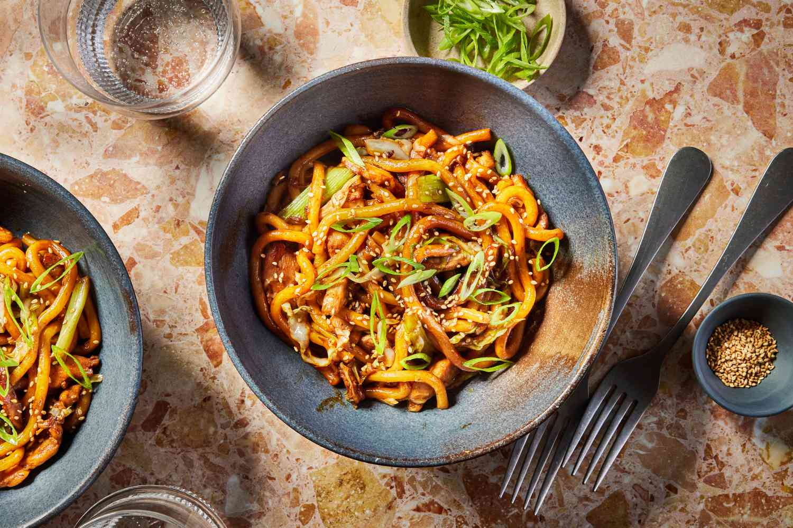

Chicken Yaki Udon

This delicious yaki udon stir-fry is similar to yakisoba, but it's made with thick,
white udon noodles and tossed with a much simpler sauce. Often used in soups, udon noodles are also delicious
fried — the texture is just awesome because they are chewy.
Ingredients
- 6 ounces frozen udon noodles
- 1 tablespoon olive oil
- ½ pound boneless chicken breasts, cut into thin strips
- ½ onion, sliced
- ½ red bell pepper, sliced
- ½ cup shredded cabbage
- ½ cup carrot matchsticks
- 1 teaspoon minced garlic
- 2 tablespoons soy sauce, or more to taste
- 1 tablespoon gochujang (Korean chili paste)
- 1 tablespoon ketchup
- salt and ground black pepper to taste
Steps
- Bring a large pot of lightly salted water to a boil. Cook udon in boiling water, stirring occasionally,
until noodles are tender yet firm to the bite, 10 to 12 minutes. Drain noodles and rinse with cold water.
- Meanwhile, warm olive oil in large saucepan or wok over medium heat. Add chicken and sauté until cooked through for 3-4 minutes.
- Add onion, bell pepper, cabbage, carrots, and garlic and cook for 3 to 4 minutes.
- Pour soy sauce over vegetables and chicken; sauté 1 to 2 minutes more.
- Add udon noodles and toss well. Mix in gojuchang and ketchup, thoroughly combining to mix all the flavors. Season with salt and pepper.
return to all recipies